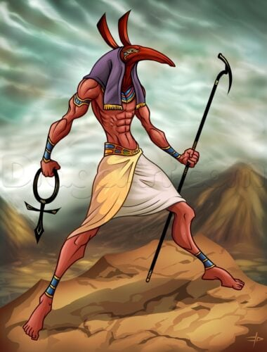

Set, also known as Seth and Suetekh, was the Egyptian god of war, chaos and storms, brother of Osiris, Isis, and Horus the Elder, uncle to Horus the Younger, and brother-husband to Nephthys. His other consort was the goddess Tawaret, a hippo-headed deity who presided over fertility and childbirth.
